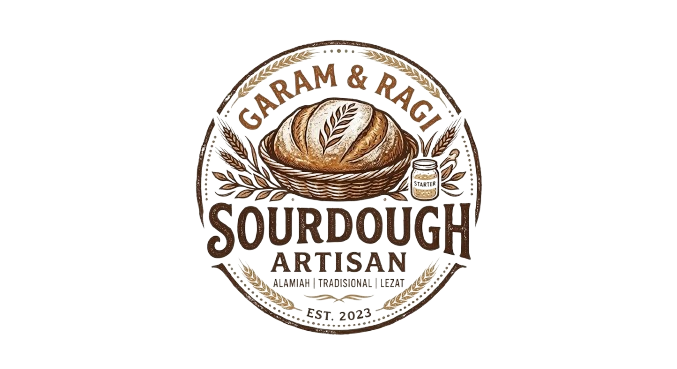

Sourdough adalah makan roti yang enak serta dibuat dengan cara mencampur starter, tepung, dan air. Sourdough dinyatakan sebagai roti sehat karena menggunakan bakteri baik. Sourdough disukai banyak orang diakrenakan sourdough memiliki tekstur guris serta kenyal.
Biasanya orang-orang makan roti yang bukan sourdough itu suka sakit perut bisa jadi bahan untuk membuat roti tersebut tidak baik. Tetapi sourdough walau bahannya kurang baik tetapu akan tetap sehat dikarenakan sourdough dibuat dengan ragi baik yaitu bakteri asam laktat yang dapat membunuh bakteri-bakteri jahat sehingga roti sourdough manfaatnya tidak membuat sakit perut. Sourdough dibuat dengan bahan simpel yaitu tepung, air, serta starter(ragi asam laktat).